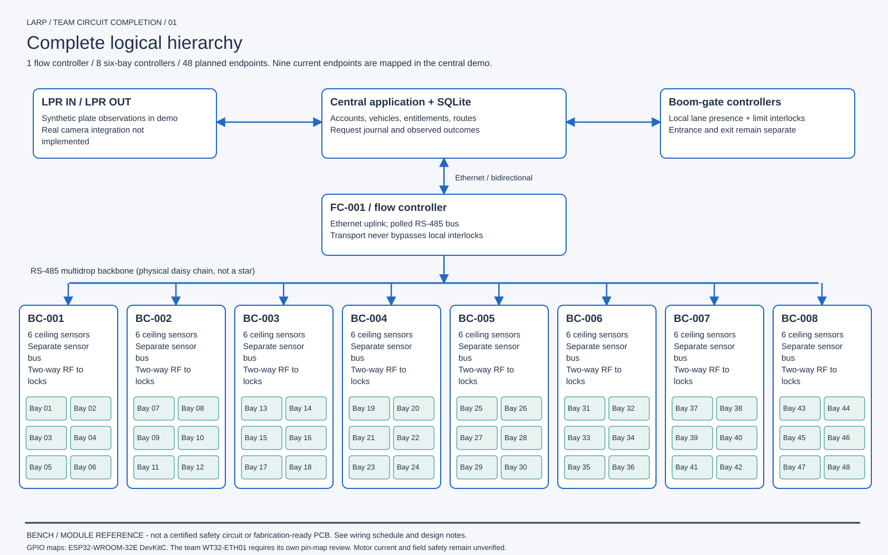
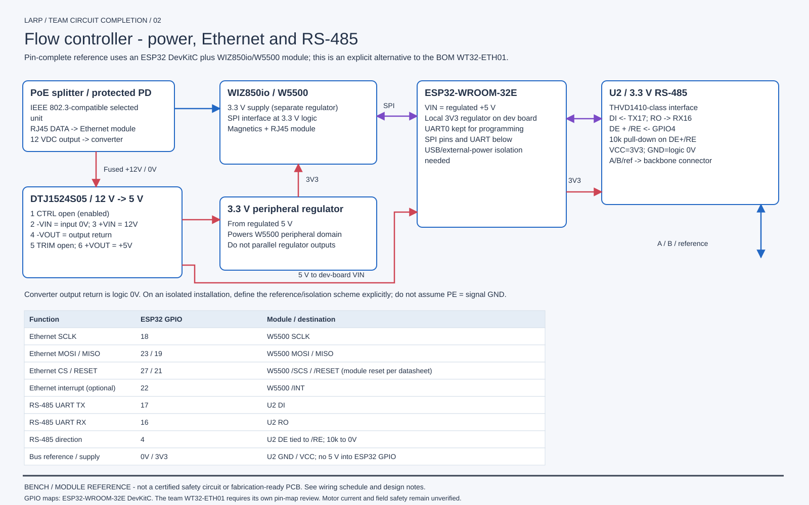
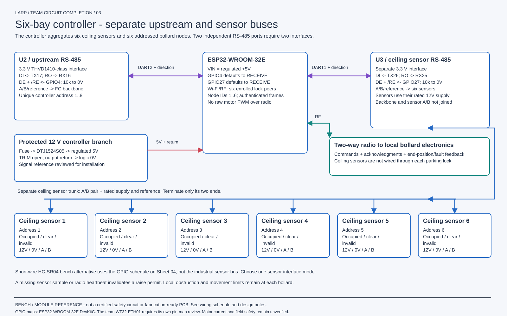
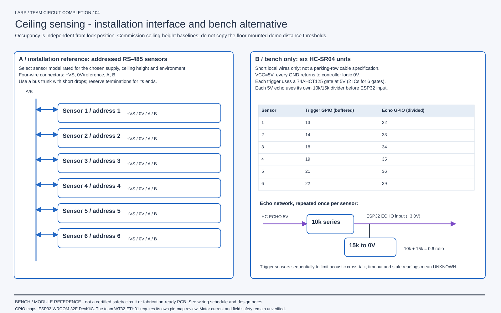
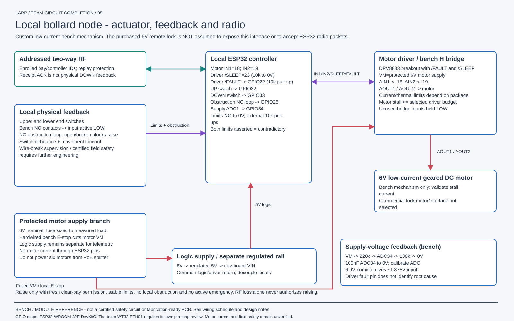
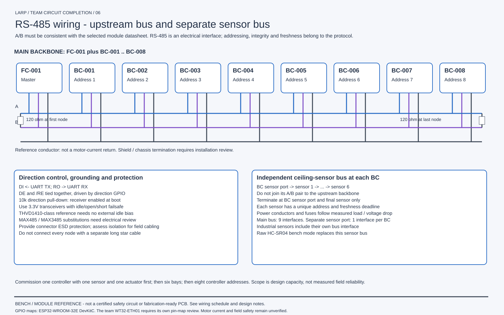
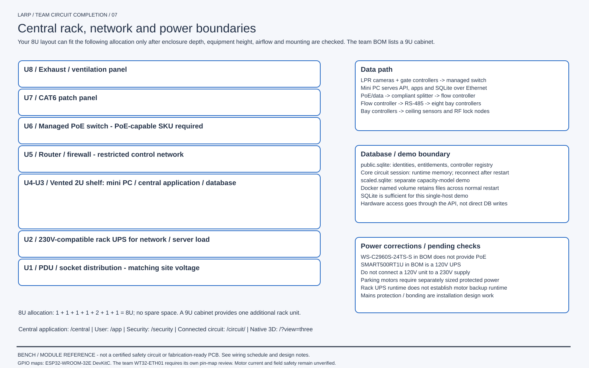
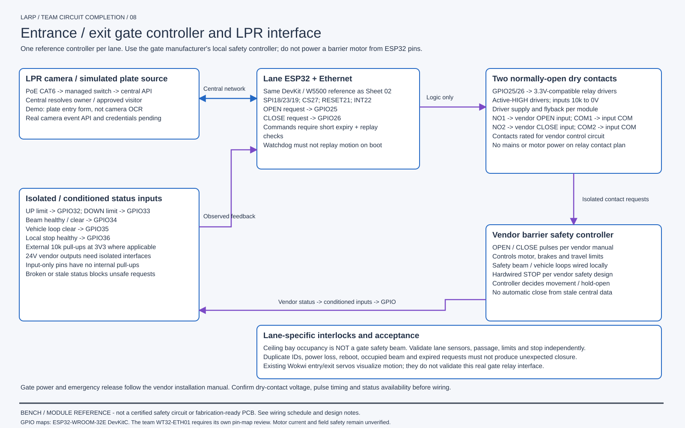

Six bays per bay controller; eight controllers per flow controller. Module-level bench reference and installation interface plan. Physical electronics, RF and safety validation are pending.







